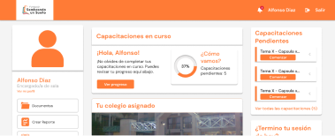

Diseñador integral
especializado en UX
Research y UX/UI
Diseño desde la observación, la estructura
y la comprensión de las personas.


Diseño con metodologías de investigación centradas en el usuario.
Proyectos seleccionados
01

Web móvil de accesibilidad para Juegos Panam / Parapanam
UX Research · Information Architecture · UX/UI Design
Plataforma web inclusiva para los Juegos Parapanamericanos 2023, diseñada para entregar información actualizada sobre accesibilidad, rutas y servicios, facilitando la movilidad autónoma de competidores y visitantes.
02

App móvil de transporte asistido para personas mayores
Accesibility Design · Interaction Design · Service Design
Golden Ride es una app de transporte privado diseñada para personas mayores, permitiendo no solo viajes sencillos, sino también planificar acompañamiento y asistencia en cualquier actividad. Una experiencia simple y cercana que pone la comodidad y la confianza de los usuarios en primer lugar.
Ver más
03

Intranet de gestión para voluntarios y colegios
UX Design · Information Architecture · Systems Design
Durante mi práctica profesional en la fundación Sembrando un Sueño, diseñé una intranet integral desde cero. Aunque fue un proyecto formativo, el desafío era real: centralizar la coordinación de voluntarios, colegios y programas. En pocos meses, transformé procesos dispersos en una plataforma que conecta a toda la comunidad.
Ver más